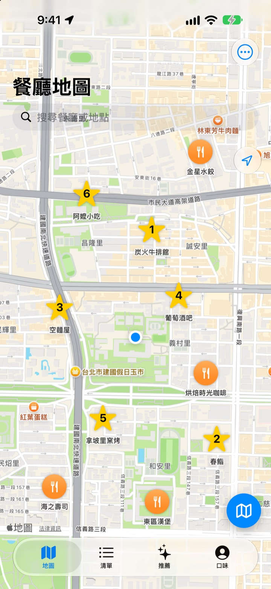
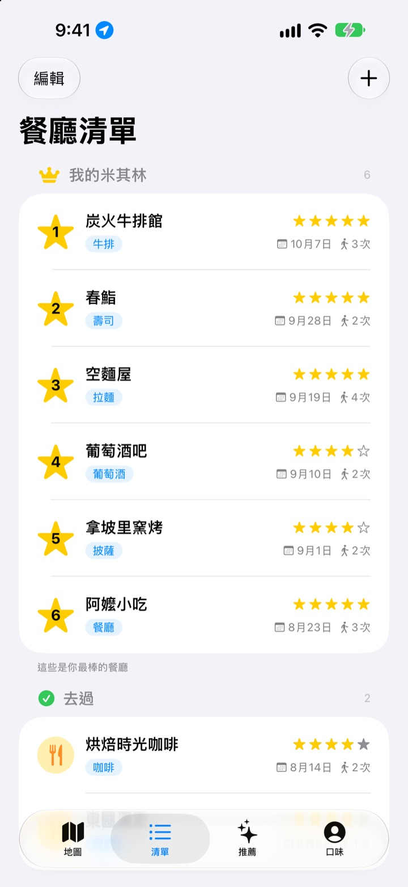
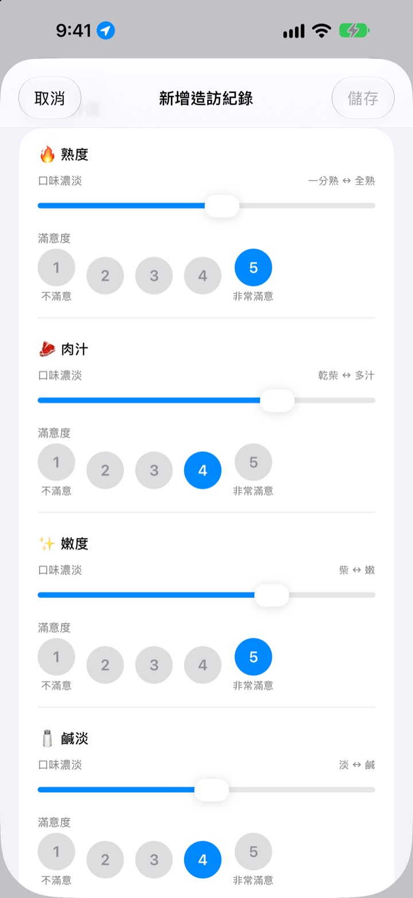
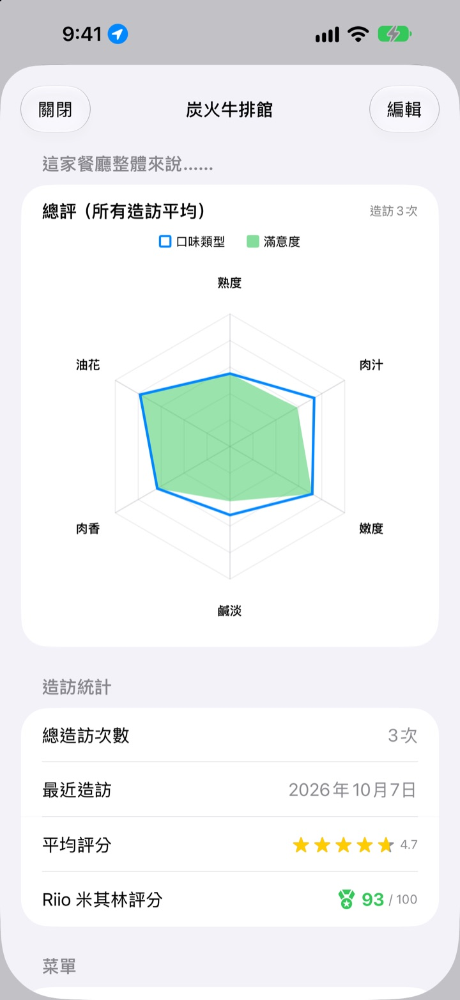

吃過的好店，
再也不會忘
把去過和想去的餐廳收進地圖，每次去都記下點了什麼、拍的照片和口味評價。下次不知道去哪吃，自己的紀錄會給你答案。
所有功能免費。不需要註冊，紀錄只留在你的 iPhone 上。

評一道菜試試
選一種料理，替每種味道的濃淡和滿意度打分。項目和計算方式都和 App 裡的造訪紀錄一樣。
那家店，到底什麼好吃？
明明記得那家店很好吃，店名卻想不起來，點了什麼、湯是不是偏鹹就更記不得了。最後只好重新搜尋，看別人的評論。人生美食把你親口嚐過的紀錄留在地圖上，讓下一次選擇靠自己的經驗。
去過、想去，還有我的米其林
在地圖上搜尋，或點一下附近的地點就能馬上儲存。去過的和總有一天想去的分開管理，最愛的六家還能從第 1 名排到第 6 名。
有人問你推薦哪家，直接把這份清單給他看。

依料理提問來評價
辣度、鹹淡這類味道的濃淡用滑桿設定，喜不喜歡則另外從 1 到 5 打分。牛排看熟度和肉汁，壽司看醋飯和配料，拉麵看湯頭和麵條，每種料理的項目都不一樣。
造訪紀錄裡也會一起留下菜色、照片、星等和備註。

值得再訪的店，一看分數就知道
造訪次數多了，餐廳頁面會顯示依所有造訪平均繪製的總評圖，以及結合星等和滿意度、滿分 100 的 Riio 米其林評分。
在儲存的餐廳用完餐離開後，過一會兒會收到提醒你記錄的通知，不會忘記寫。

三步開始
- 1
儲存餐廳
在地圖上搜尋，或點一下附近的地點加入清單。
- 2
去過就記錄
記下菜色、照片、星等和口味評價。口味評價可自由選擇。
- 3
挑下一家
看看 Top 6 和評分，再用 Apple 地圖、Kakao 地圖或 Naver 地圖導航。
不同料理的評價項目
- 🍽️ 一般
- 辣度、濃郁度、甜度、鹹度、油膩度、本味
- 🥩 牛排
- 熟度、肉汁、嫩度、鹹淡、肉香、油花
- 🍣 壽司
- 醋飯、魚生（食材）、芥末、平衡、捏製、溫度
- 🍜 拉麵
- 湯頭、麵條、叉燒、配料、溫度、平衡
- 🍕 披薩
- 餅皮、醬料、起司、熟度、配料、平衡
- 🍷 葡萄酒
- 醇厚度、單寧、酸度、香氣、餘韻、平衡
- ☕ 咖啡
- 酸度、醇厚度、風味、餘味、甜度、平衡
其他料理用第一行的一般項目來評價。也可以自己建立料理分類。
常見問題
要怎麼新增餐廳？
在地圖上方的搜尋欄輸入餐廳名稱，然後在結果中點一下「加入我的餐廳清單」。 也可以點一下地圖上顯示的附近地點，直接新增。 搜尋不到的地方，可以在目前位置或地圖上選定的位置直接新增。
「去過」、「想去」和 Top 6 是什麼？
去過：已經去過的餐廳，可以留下造訪紀錄。 想去：總有一天想去的餐廳。去過之後，請在餐廳詳細資訊畫面把它改成「去過」。 Top 6（我的米其林）：替你最珍愛的六家餐廳排出第 1 到第 6 名。標為「想去」的餐廳不能設為 Top 6。
一定要做口味評價嗎？
不用，可以自由選擇。評價後，餐廳頁面的總評圖會疊上口味濃淡和滿意度，也會計入 Riio 米其林評分。
「今天這家如何？」的通知什麼時候會來？
在已儲存的餐廳附近停留超過 5 分鐘再離開，大約 40 分鐘後就會收到通知。這項功能需要將位置權限設為「永遠」並允許通知。 如果不想收到通知，請前往「設定」>「App」>「人生美食」關閉通知，或將位置權限改為「使用 App 期間」。 位置判斷只在裝置上進行，不會儲存你的移動軌跡，也不會傳送到外部。
不允許位置權限就不能用嗎？
可以用。你可以在地圖上自行選擇位置來新增並記錄餐廳，只是無法顯示目前位置，也收不到造訪後的通知。
地點搜尋沒有結果
地點搜尋需要連上網路。 請換個名稱或用更短的關鍵字再搜尋一次。 仍然找不到的話，可以在地圖上選定位置直接新增。
紀錄存在哪裡？會和其他裝置同步嗎？
餐廳、造訪紀錄和照片都只儲存在這支 iPhone 上。目前版本不支援與其他裝置同步，「設定」中的 iCloud 備份與還原也暫時無法使用。iPhone 的完整備份（iCloud 備份或電腦備份）會包含本 App 的資料。
我想清除所有紀錄
在地圖畫面開啟「設定」，點一下「刪除所有資料」，即可清除餐廳和造訪紀錄。這個動作無法復原，請小心操作。如果要連照片一起徹底刪除，請刪除本 App。
刪除 App 再重新安裝，紀錄還會在嗎？
不會。因為紀錄只儲存在裝置上，刪除 App 時會一併清除。刪除 App 前請務必確認。
真的全部免費嗎？
是的，所有功能都免費，沒有廣告，也不用註冊。設定裡的「支持開發者」完全自由選擇，支持與否功能都一樣。
如果以上沒有你要的答案，請在 App 的「設定」>「支援」中直接傳送給我們，或寫信到 mizzking75@gmail.com。 附上 App 版本、iPhone 機型，以及在哪個畫面做了什麼操作，我們就能更快處理。